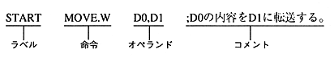

[Label] 〈Instruction〉 〈Operand〉 [Comment] |
[] Can be omitted, but <> cannot be omitted if either one is specified.
The delimiter for each element is a space or tab.
* As a special function, “:” is attached to the end of the label, “PUBLIC”, and “#” is attached, “EXTERN”.
Example: MC68000 statement example
